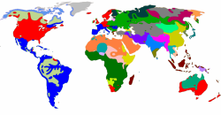

Case
It is sometimes averred that English does not have a case grammar.
While it is true that English makes few changes associated with case,
all languages exhibit case in one way or another. Verbs, for
example, have subjects (nominative case) and objects (accusative case)
and, while simple nouns do not alter to show which role they perform,
pronouns, as sub-set of nouns, certainly do.
There is, for example, an obvious difference between:
She told him
and
He told her
which is signalled by the forms of the pronouns.
What is case? |
Case is a grammatical category which shows the relationships
between nouns (or noun phrases), pronouns, determiners and adjectives
and other items in a clause.
In some languages, not only nouns, pronouns, adjectives and
determiners are altered to show case but case may also affect the form
of participles and prepositions.
For example, in the English sentences:
- The man kissed the woman
- The woman kissed the man
In English, we only know who did what to whom by the order of the words.
The subject comes first in both sentences so we know that is the doer of
the action. The object follows the verb so we know that is the
receiver of the action. If we reverse the order, we reverse the
sense.
In sentence 1. the man did the kissing and in sentence 2. the woman
started it.
We have now identified two of the three cases in English: the
subjective case, also called the
nominative and the
objective case, also called the
accusative.
(If none of the above makes any sense to you, follow
the guide to pronouns
(new tab) in the initial training area of this site.)
Modern English does not inflect adjectives to show case at all and
only adds 's to nouns to show the genitive case.
Determiners such as articles, numerals and demonstratives do not change
to indicate case but possessive determiners and personal pronouns are
altered to show case.
In all other circumstances, nouns and adjectives are unchanged whatever
their relationship to other items in the sentence is.
This is not the situation in other languages, some of which
depend heavily on making changes to adjectives, pronouns and nouns
to show what their relationship is to other items in a clause.
This means that in English, there is no change to the underlined
words in these examples although the role the words are playing
grammatically is very different. For comparison, the
translation into German, which has a complex case structure is shown
and you can see that many of the words (articles, prepositions and
adjectives in this case) change to show the relationships between
the words in the sentences.
| English | German |
| Please put the red papers on the shelf | Bitte stellen Sie die roten Papiere ins Regal |
| Some red papers are on the shelf | Einige rote Papiere stehen im Regal |
| The shelf holds some red papers | Das Regal enthält einige rote Papiere |
There are some more examples in this guide to make this clearer.
 |
The three cases in English |
Modern English has only three cases and it is often not clear from
the form of words which case is being used. This is why, in some analyses,
English does not have a case structure at all because it has so few ways
of marking elements of syntax to signify the relationships.
English does, however have a case-based pronoun structure (I
vs. me vs. my vs. mine, vs. myself etc.) and it can distinguish other
items in terms of subject and object (who vs. whom,
for example) or possession (using whose or adding 's
to a noun).
Arguably, only the following 6 words are inflected in Modern English
to show case: I, we, he, she, they (and in formal language
also who). Old English had a complex case structure but
most inflexions have been lost in the transition to Modern English.
(This ignores the fact that the genitive in English is marked either
with the 's inflexion or with the periphrastic of-phrase.)
Here are the three cases with examples highlighted:
- Subject or Nominative
This refers to the doer of a verb:
John came in
The hammer did the trick
She went away
A lot of discussion followed
Subjects are noun phrases, usually, but can be finite clauses as in, e.g.:
That John was allowed out early surprised me
or non-finite clauses as in e.g.:
Turning on the tap let the water flow into the garden
To do that would be very foolish - Object or Accusative

This refers to the thing or person acted on or the goal of a movement:
I told Mary
I spent all the money
She hit him
They began a long voyage upriver
Again, objects are usually noun phrases but can be finite clauses as in, e.g.:
I think he has written to her
or non-finite clauses as in, e.g.:
I imagined seeing a unicorn
In some functional grammar analyses, the complement of a preposition is referred to as the prepositional object as in, e.g.:
to the railway station
over the bridge
behind the garage
etc.
Referring to prepositional objects makes sense in a case analysis, too, because all prepositions in English are followed by nouns or noun phrases in the accusative so, for example, we have:
By whom was it done? (not who)
Between you and me (not I)
She invited them (not they)
etc.
The object in English can be direct as in:
I brought her
I brought it
or indirect as in
I brought her it
but English makes no distinction between direct and indirect objects in the structure of any words.
Many languages which have more developed case structures distinguish between the direct object (the accusative) and the indirect object (the dative). A range of languages will also distinguish between concepts of position and movement towards or away from. In German, for example,
It is on the table
translates as:
Es ist auf dem Tisch
using the masculine dative case ending on the definite article (dem), but
I put it on the table
translates as:
Ich legte es auf den Tisch
using the masculine accusative ending on the definite article (den).
Modern English no longer makes this distinction but Old English had the same four cases as Modern German with complex inflexions on nouns, adjectives and determiners.
Other languages may reserve a single case for prepositional objects and others may use a range of cases depending on the meaning of the preposition (or, in some cases, irregularly and randomly).
Because English does not distinguish between direct and indirect objects the case of either is sometimes described as oblique. - Possessive or Genitive

This is often assumed to refer to ownership but the term Possessive, as is shown in the guide to it, is misleading because the case refers in English to more than ownership:
The car's engine caught fire
My opinion was ignored
It's mine to spend as I like
The decision of the court is to set him free.
I have John's letter in front of me.
Whose idea is that?
Her imprisonment was unfair
The Genitive in English is quite complicated and genitive structures vary in meaning as well as occurring as integral parts of object and subject phrases and clauses.
English does not alter the noun or any determiner to mark Nominative or Accusative cases
so only word order is a guide to the grammatical function. That
means that:
The delay caused a problem
is only distinguishable from
A problem caused the delay
by word ordering.
Pronouns are usually marked but not in all cases because the system is
defective. The pronouns you and it, for example,
serve as both the Nominative and Accusative forms:
She told you (Accusative
You told her (Nominative)
It broke (Nominative)
They broke it (Accusative)
The Genitive is marked in English but with some limitations, discussed
elsewhere.
An argument can be made for a fourth case in English, the dative. The case is marked in many languages, such as German and applies to a certain type of object. In English, it can be said to apply to the indirect object noun phrase used with a ditransitive verb such as give, send or make. The indirect object is either
- the person or thing affected by the action, in which case it can
usually be rephrased with a to expression as in, e.g.:
She sent me a letter
or
She sent a letter to me - the person or thing which is the beneficiary of the action, in
which case it can usually be replaced with a for expression
as in, e.g.:
She made me a birthday card
or
She made a birthday card for me.
However, in English, there is no change to the noun to signify case
and no change either to signify a difference between indirect and direct
object pronouns so the dative case is usually invisible (which doesn't
mean it doesn't exist).
The alteration in syntax for the indirect object in English
as in:
She read the children a story
changing to:
She read a story to the children
is called
the dative shift or dative alternation, incidentally.
A list of ditransitive verbs in English is available via a link at the end.
|  |
Other languages do things differently |
A large number of languages, including Slavic languages, Germanic languages (except English), Romance languages, Persian, Turkish, Greek and a host more are described as synthetic, meaning that words are formed by the synthesis of a root and an affix. This is not a clear-cut category because some languages are more enthusiastically synthetic than others and even an isolating (or analytic) languages such as English shows some tendency to alter the form of the word to mark case, especially with pronouns.
If you speak some German, the following will be familiar to you:
- Der Mann küsste die Frau
- Die Frau küsste den Mann
Sentences 3 and 4 are direct translations of sentences 1 and 2 above.
Notice, however, that there is subtle difference: the definite article
for Mann changes from der to den in sentence 2.
This is because German is one of many languages which distinguishes
between cases by changing the form of words. It can also change
the form of adjectives and nouns to reflect the case. In this
example, the article for the woman is the same in both cases.
The second thing to note is that reversing the word order does
not reverse the meanings of the sentences:
- Die Frau der Mann küsste
- Den Mann die Frau küsste
A German speaker might be mildly surprised by the word-order change but under no illusions about who did what to whom because the accusative ending on the article is intact so we know that the man is the object in sentence 6 and it was she who did the kissing. In sentence 5, the article is der so we know that the man cannot be the object of the verb.
Exactly the same thing is possible in a whole range of languages. Here's how it looks in Greek, for example:
- Ο άνδρας φίλησε τη γυναίκα (O andras filise ti gineka)
- Η γυναίκα φίλησε τον άνδρα (I gineka filise ton andra)
Here you can see that more changes occur:
- o is the definite article for the man in the subject (Nominative) case and it changes to ton in the Accusative.
- The noun for man also loses the final s.
- I is the article for the woman and it changes to ti for the Accusative case.
The point, however, remains that changing the order of the words will not confuse the hearer about who did what to whom.
How many cases are there in other languages? |
Lots. The better news is that most European (i.e., Indo-European languages) have no more than eight or nine and many don't really have a case grammar at all (although all languages have cases). The main cases are:
- abessive
- signals without something.
In English the meaning is almost solely expressed with the preposition without.
For example:
They left without me - ablative
- indicating movement away from something or a cause
of something
For example, the house is in the ablative case in
The car drove away from the house.
In
We stopped work because of the weather
the ablative form of the weather is selected in many languages.
In English, the case is usually represented by prepositions such as away from, from, owing to or because of. For example:
The plane flew from Athens to London
The boy ran away from us
The train was late owing to the weather
etc.
(The last of those, in German, requires an ablative use of the genitive, incidentally.) - accusative
- signals the direct object (see above). In English, all
prepositions are followed by the accusative so we say
between you and me
not
between you and I. - comitative
- signals accompanied by something or someone and is quite rare (Korean has this case). Most languages content themselves with a preposition or postposition to signal the sense.
- dative
- the indirect object, e.g.:
She gave me a kiss.
she is the nominative, me is in the dative and a kiss is in the accusative case (although Modern English never distinguishes between the dative and accusative in the form of any word).
We can move these around in English but we have to add to to signify the dative case:
She gave a kiss to me
which would, for example be:
Sie gab mir einen Kuss
in German with mir in the Dative case and einen Kuss in the Accusative (signalled by the addition of -en to the article).
The dative case in English is not distinguished although prepositions such as to and for represent it as in, e.g.:
He read a story to the children
She cooked dinner for me - ergative
- the ergative case applies to verbs in which the ostensible
grammatical subject of the verb is, semantically, the object of the
verb. For example:
The door opened
means, in fact:
Something or someone opened the door
or
The door was opened
and
The potatoes boiled
means:
Someone boiled the potatoes
or
The potatoes were boiled
In English, we allow this use of ergative verb forms but do not mark the noun for case. Other languages allow the same use but it is an identifiable case with special verb and noun forms. For example, in Basque:
I boil the water = Ura irakiten dut
but
The water is boiling = Urak irakitzen du.
For more on ergative verbs, which are quite common in English, see the guide to verb and clause types, linked below. - essive
- signals as something. In, for example:
He worked as a waiter
the noun waiter will be signalled by inflexion as essive in nature. - genitive
- indicating possession, origin or description (at least)
For example,
My house is here
contains the genitive determiner, my.
and
The government's policy
contains the genitive marker 's but refers to a description of the policy rather than its owner.
In some languages, the form of the noun will also change to signify the genitive case. For example,
centre of the town
in Czech is
centrum města
with the ending on the word for town, město, changing from o to a.
English marks the genitive in two ways (see below) as well as using the pronoun / determiner whose to express the idea. - instrumental
- indicates something being used for a purpose
For example, in
I hit it with a hammer
the word hammer is in the instrumental case.
In Polish, for example, the word hammer translates as młotek but with a hammer translates as młotkiem.
Latin has such a case, usually called the ablative which includes the locative (see next).
This case in English is usually represented by the prepositions by and with although other expressions such as using, by use of and through as well as via also express the idea.
A further case, the instructive in, e.g., Finnish refers to with the aid of something. - locative
- indicates a location
For example, in some languages the form of the box in
We left it in the box
would change to indicate locative case.
So, for example, the Czech for Prague is Praha but in Prague translates as v Praze.
In some languages the locative is further subdivided into categories such as absolute position (on the hill), orientation (on the left of the hill) and direction (towards the hill).
It is helpful to mention to learners whose first languages distinguish this case in the grammar that it corresponds, roughly, in English to the prepositions in, on, towards, by and at.
Japanese distinguishes destination from origin by having two separate verb cases: ablative (from a place or origin) and elative (to a place or destination).
A few languages (notably Finnish, Estonian and Hungarian) also have subdivisions of the locative:- adessive (at something)
- aditive / allative (onto something)
- comitative (with something)
- elative (out of something)
- inessive (into something)
- superessive (below / under something)
- nominative
- the subject (see above). This case is, in most languages, the unmarked form of a noun and its determiners and adjectives. I.e., it is considered the prototypical form and is the one which dictionaries will cite when referring to the meaning of words.
- partitive
- this is a rare case which is akin to the genitive structure in English of, e.g., a pane of glass. It exists in Finnish and Estonian and some other languages. In some analyses, the word some is considered a partitive article (but not on this site).
- sublative
- is a rare case signalling with respect to something.
So in, e.g.:
With respect to your enquiry
the word enquiry is in the sublative case and that is signalled in some languages by inflexion. - translatative
- is a rare case signalling turning into something as in,
for example, in English:
She became the manager - vocative
- indicating the addressed person or thing
For example, in
Good morning, Mary!
some languages will change the form of Mary to indicate that she is being addressed.
So, for example, in Greek
Dimitris arrived
translates as
Ο Δημήτρης έφτασε (O Dimitrees eftase)
but
Hello, Dimitris
translates as
Γεια σου Δημήτρη (yasu Dimitree)
with the 's' ending dropped to indicate that Dimitris is being addressed.
 |
How does case work in other languages? |
It is not possible to describe the exact function of cases in all languages because there is a lot of variability in how the languages deploy the cases if and when they do. German, for example, uses the dative case or even the genitive to describe cause and Greek uses the genitive where other languages will use the dative, an adjective or a compound noun. Some languages have cases not in this list.
Here is a short alphabetic list of how many common (or interesting) languages work in terms of case:
- Albanian
- has 4 cases: nominative, accusative, dative and genitive governing all adjectives and nouns and differing depending on the type of reference (definite or indefinite).
- Arabic
- has 3 cases (nominative, accusative and genitive) in most varieties. Arabic varies widely across the areas where it is spoken and is probably better classified as a macro-language or language family.
- Basque
- has nine cases: nominative, ergative, dative, genitive (origin), genitive (possession), comitative, inessive (within something), illative (into something) and ablative.
- Bengali
- has 5 cases: nominative, accusative, dative, genitive and locative.
- Bulgarian
- has a case structure but only obviously in the pronoun system (a bit like English). Unusually for a Slavic language, the case forms have mostly been discarded.
- Chinese languages
- have no inflexions but they do, of course, have ways of distinguishing cases, either by the use of particles or word ordering, much as English does to show the indirect object.
- Cambodian (Khmer), Lao and Thai
- have no inflexions at all and all case relationships are signalled by the use of prepositions or particles of one kind or another.
- Danish
- works very similarly to English in only adding an 's' to signal the genitive and using prepositions to signal other cases.
- Dutch
- unlike other Germanic languages, has no case structure in its modern form.
- English
- case structure is nowadays mostly confined to the pronoun system (and there's a guide to the pronoun system linked in the list of related guides at the end). Even the pronoun system is defective, however, with some items showing no changes.
- Estonian, Finnish and Hungarian
- all have very well-developed case structures: Finnish has 15(!)
cases, Estonian 14 and Hungarian just seven. In the case
of Finnish, we can encounter nouns and determiners in:
nominative, accusative and genitive cases as we would expect but
also in the partitive, inessive, elative, illative, adessive, ablative, allative, essive, translatative, instructive, abessive
and comitative.
Estonian lacks only the accusative from that list and Hungarian is satisfied with only seven cases: genitive (used with many prepositional relationships), superessive (below, at, inside, over etc. something), sublative (with respect to something), allative, adessive, ablative and comitative-instrumental. - German
- has 4 cases: nominative, accusative, dative, genitive. It also uses case to distinguish between position or direction towards. Prepositions are variably and unpredictably associated with certain cases.
- Greek
- has 4 cases (nominative, accusative, vocative, genitive) and often deploys the genitive to signal an attribute or a classifier (hence the overuse in English of expressions such as the room of the teachers rather than the teachers room or The Airport of Kalamata rather than Kalamata Airport).
- Gujurati
- has six cases: nominative, accusative / dative, genitive, ablative and locative.
- Hindi and Urdu
- have, in their modern forms, only two cases: direct (i.e., nominative) and oblique (applying to direct or indirect objects).
- Icelandic
- unlike other Scandinavian languages, has retained a 4-case structure: nominative, accusative, dative and genitive.
- Japanese and Korean
- have a range of cases including nominative, accusative and
dative but how they are used is very different from European
languages and case is marked by particles placed after the noun.
Japanese does not mark case on pronouns and Korean does not even
have a third-person pronoun as such. Japanese and Korean are
unusual in having two nominative cases, one referring to the
topic of the discourse and the other to the grammatical subject.
Japanese also has a genitive, locative, dative, accusative, elative
(referring to destination) and ablative case (referring to
origin).
Korean is slightly more complicated, adding a comitative case and an essive case as well as a vocative.
Case forms in both languages are affected by considerations of respect and politeness. - Latvian and Lithuanian
- Latvian has 5 cases: nominative, accusative, dative, genitive and locative and Lithuanian adds an instrumental case to the list.
- Romance languages, such as Spanish, French, Romanian, Catalan and Italian
- do not mark nouns for case so word order is stricter (and more like English). The pronoun systems in these languages are well developed in terms of case structures, however. Case relationships are routinely signalled, as in English, by the use of prepositions.
- Russian and other Slavic languages
- has 6 cases (nominative, accusative, dative, genitive, instrumental, propositional (to talk about, also called locative in some grammars). Ukrainian is similar as are Polish and Slovak, and Czech adds a vocative to the list as does Serbo-Croat.
- Swedish, Norwegian and Danish
- are much like English with only the pronoun system affected by case (nominative, accusative and genitive in the first two language and nominative, oblique and genitive in Danish). However, see Icelandic (above).
- Tamil
- has seven cases: nominative, accusative, dative, genitive, instrumental, comitative and locative.
- Turkish
- has six cases: nominative, accusative, dative, genitive, locative and ablative. The ablative is used to indicate a comparative structure and may govern some postpositions (with others governed by nominative and dative forms).
Wikipedia claims that Tsez, a Northeast Caucasian language, has, counting the locative and non-locative cases together, no fewer than 64 cases. They are not listed here.
 |
Why does this matter to English language teachers? |
Apart from the general case to be made in favour of language teachers knowing how the languages their students speak function, there are other implications. Click here when you have thought of some.
- Languages with complex case structures represent many of the
relationships for which English deploys prepositions (something
which makes it harder for speakers of the languages to get to grips
with the English preposition system).
So, if you are teaching learners whose first languages denote certain relationships between items in a clause by using case markers, it makes sense to focus on how English denotes, for example, the difference between accusative and dative or how it signals instrumental relationships (such as with a spade etc.) - It highlights the need to focus very clearly on word order. It is word order alone which distinguishes the meaning of the sentence pairs in English and that may come as a surprise to many learners.
- If you know how your learners' first languages operate in regard to case, it makes teaching things like pronouns much more straightforward.
- Knowing that, for example, some languages will deal differently with spatial relationships helps teachers to explain language items such as the difference between out of (an ablative in many languages) and outside (a locative, or essive).
- You cannot understand how to form acceptable relative clauses in English without some knowledge of case because the distinction between who and whom will not be clear and the fact that the relative pronoun can be omitted in some circumstances is dependent on recognising whether it is in the nominative or accusative case. For more, see the guide to relative pronoun clauses linked in the list at the end.
- There is evidence that adult learners in particular will use the structures of their first languages to try to work out the difficulties presented by a second language. Knowing what those first-language structures are helps language teachers explain and plan.
| Related guides | |
| fronting | for more on how word order is disturbed to signal markedness |
| markedness | for more on how word order in English signals markedness for case |
| pronouns | for a guide to the pronoun system of English (which is case marked) |
| genitive | for the guide dedicated to the one case which English invariably marks |
| noun post-modification | which considers the genitive of structure in the context of other noun post-modifying structures |
| relative pronoun clauses | for the guide to another area in which English marks for case and varies structure case dependently |
| a mini-course | this is a short course in comparing languages with an example lesson |
| word order | for more on basic word ordering in English and other languages |
| verb and clause types | for more on ergative and other verb types in English |
| ditransitive verbs | a list with examples and a few notes |
There's a very simple test on some basics here or you can try something more challenging.
References:
Chalker, S, 1987, Current English Grammar, London: Macmillan
Campbell, GL, 1995, Concise Compendium of the World's Languages,
London: Routledge
Quirk, R, Greenbaum, S, Leech, G & Svartvik, J, 1972, A Grammar of
Contemporary English,
Harlow: Longman
Swan, M and Smith, B (Eds.), 2001, Learner English, 2nd Edition,
Cambridge: Cambridge University Press